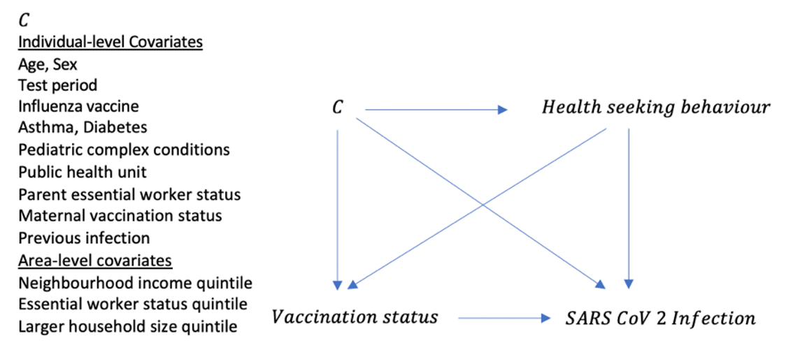

Why not use a cohort study instead of a test-negative study? (and vice versa)
When we see vaccine effectiveness studies, we often see two types: test-negative studies and cohort studies.
Cohort studies are really nice because they enable us to obtain the relative risk, which is arguably more readily interpretable than the odds ratio. They can also establish the prevalence of a disease in a population.
Test-negative studies have the advantage of being relatively cheaper and more readily conducted. This is not really true when we talk about population health administrative data, where the data is collected prospectively no matter what.
So why would we choose to do a test-negative study instead of a cohort study, or a case-control study for that matter?
There are two mains reasons(Jackson and Nelson 2013) are misclassification bias and confounding.
In a perfect world, we could fully capture vaccination, infection, and healthcare seeking behaviour in our population, we could make this 2x2 table:

And the estimand here is (in the absence of effect modification by care-seeking behaviour):

The only way we know if someone got Covid-19 is if they got a PCR test. So our outcome is ‘tested positive for Covid-19’. When we do a cohort study, our ‘did not test positive for Covid-19’ group is sampled from B, C, D, E, F for the vaccinated and the ‘did not test positive for Covid-19’ group is sampled from H, I, J, K and L for the unvaccinated group. Similarly, when we do a case-control study, we sample controls from B,C,D,E,F and H,I,J,K,L.
This will lead to biased results from misclassification because group D and group J, the infected with influenza but did not seek PCR testing, will be misclassified as ‘not infected’ in the cohort study, and as controls in the case-control study. This will likely bias the results toward the null, as those who do not vaccinate are also less likely to test, and more likely to appear ‘not infected’.
There is also bias from healthcare-seeking behaviour because those with a higher healthcare seeking behaviour propensity will be more likely to vaccinate and also more likely to seek testing.
How does a test-negative study avoid misclassification bias and confounding bias?
By restricting on those who test, one no longer needs to sample from the ‘not care seeking’ population, so misclassification that exists from including those who are actually positive but did not test, is no longer an issue.
Also, by restricting on those who test, we block the backdoor path that can give rise to biased estimates.

Best of all, we can still get valid estimates of VE (see below), though our ability to generalize to the not tested is limited.

But wait! Doesn’t your other study use a cohort design?
Why yes it does! Thanks for asking. It would be challenging to do a test-negative study with our cohort data because we would have a limited sample size to find an effect.
We are trying to mitigate misclassification by including tests reported by parents via rapid antigen tests. We also have an extensive quantitative bias analysis planned for misclassification outcome by using record-level probabilistic QBA processes.
We will try to mitigate confounding by health-seeking behaviour by adjusting for visits to the family doctor, and other indicators of health-seeking behaviour including education, income, ethnicity, and attitudes toward vaccines.